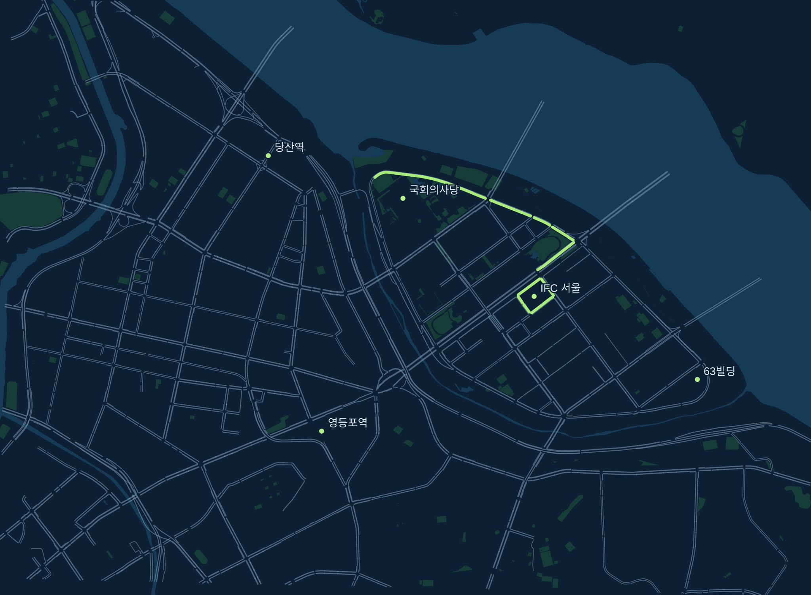

발표 자료
프로젝트 배경과 방법,
최종 결과를 담을 PDF입니다.
TEAM 08 · 증권맨의 삶
하나의 모델로, 서로 다른 출발지와 목적지를.
랜드마크 7곳과 게이트 6곳, 총 13곳 중
서로 다른 두 곳을 무작위로 골라
각각 출발지와 목적지로 설정하고 자율주행합니다.
출발·도착 조합 156개13 × 12 · 출발·도착 방향 구분

실제 도로망 기반 지도 · 연두색은 예시 경로이며 모델의 주행 결과가 아닙니다.
주행 판단을 위한 관측
가감속 · 차로 변경 행동
심야 · 주간 · 출근
랜드마크 7곳 · 게이트 6곳
OPEN PROJECT
구현 코드부터 데이터, 발표와 주행 영상까지.
직접 살펴보고 프로젝트의 과정을 확인해 보세요.
도로 환경 구축부터
PPO 학습·평가 코드까지.
여의도 SUMO 프로젝트의
데이터셋을 확인하세요.
프로젝트 배경과 방법,
최종 결과를 담을 PDF입니다.
학습한 정책이 여의도를
주행하는 모습을 담을 예정입니다.
BUILT ON REAL STREETS
차로와 교차로, 신호와 주변 차량.
실제 도시 데이터를 바탕으로 구성한 환경에서
목적지까지의 주행을 학습합니다.
일상적인 도심 교통 속에서 신호와 주변 차량에 대응하며 목적지로 향합니다.
LEARNING TO DRIVE
경로마다 별도 모델을 두는 대신, 하나의 정책이
156개 출발·도착 조합을 대상으로 주행을 학습합니다.
가감속과 차로 변경은 모델이 직접 선택합니다.
주변 차량과 신호,
도로와 경로 정보를 읽습니다.
현재 정책이 가감속과
차로 변경 행동을 선택합니다.
SUMO에서 주행 경험을 모아
보상으로 정책을 개선합니다.
자차 속도, 주변 5개 차로의 앞뒤 차량 거리와 상대속도, 연결성, 밀도.
신호와 정지선, 교차로 거리, 남은 경로, 제한속도, 교차로 상대 차량과 먼 앞차 정보.
도로 단위 다음 회전 방향 4개와 주변 5개 차로의 정적 연결 방향 20개. 추천 차로 명령은 제공하지 않습니다.
현재는 보조 없는 64차원 모델의 학습 환경을 구성한 단계입니다. 최종 주행 성능과 평가 결과는 학습 완료 후 공개합니다. 기존 보조 사용 모델의 성능을 새 모델의 결과로 표시하지 않습니다.
EXPLORE THE PROJECT